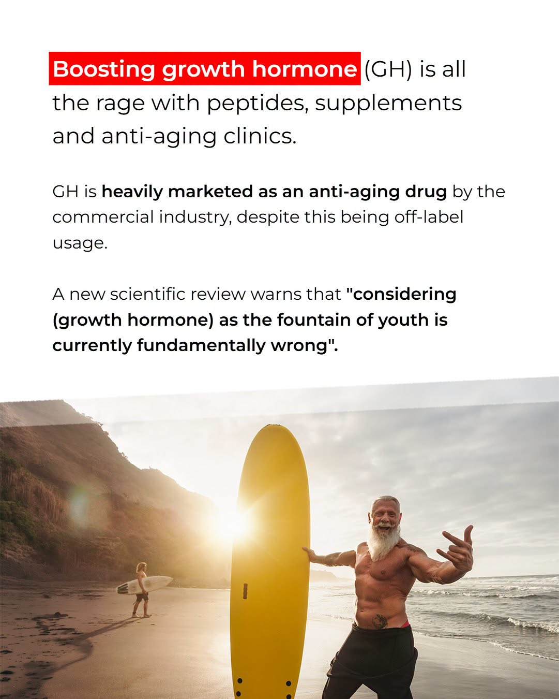
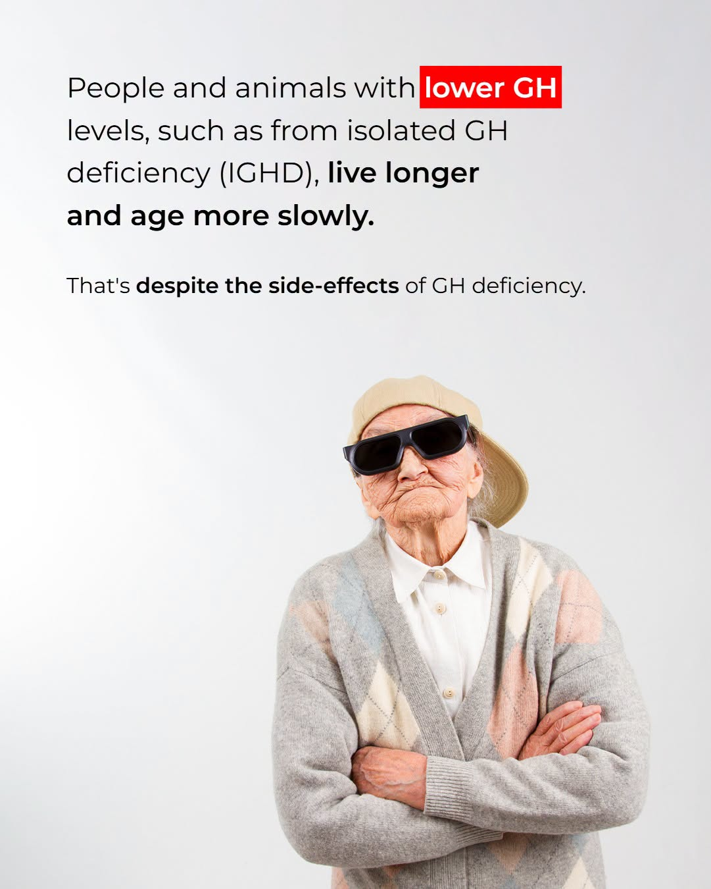
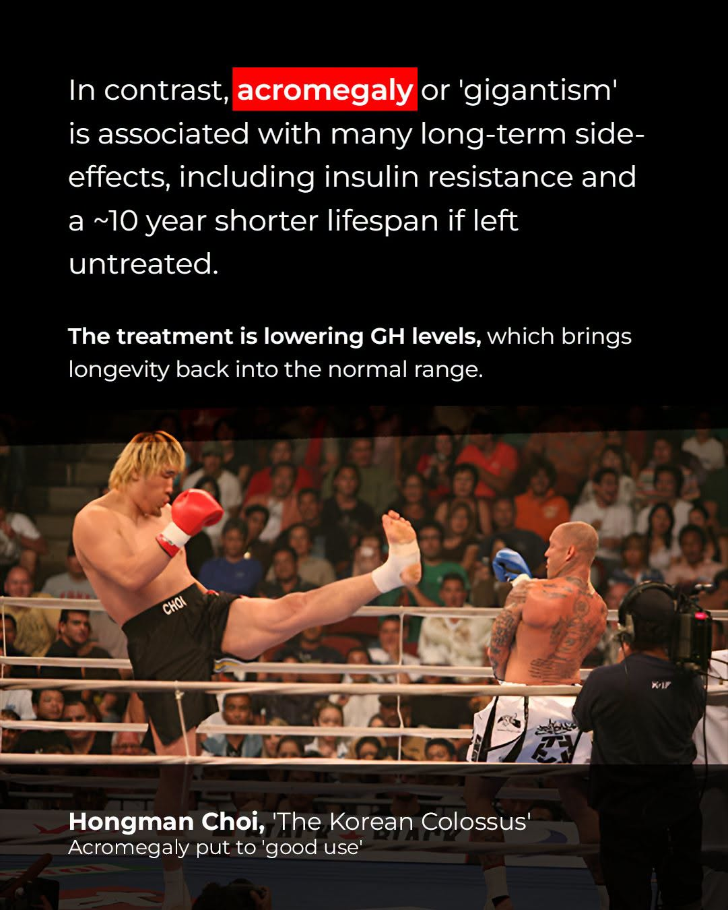

The last Henselmans PT Course of 2026 is open for enrollment! DM “course” to learn more and enroll.
Boosting growth hormone (GH) is all the rage with peptides, supplements and anti-aging clinics. GH is heavily marketed as an anti-aging drug by the commercial industry, despite this being off-label usage. A new scientific review warns that "considering [growth hormone] as the fountain of youth is currently fundamentally wrong".
People and animals with lower GH levels, such as from isolated GH deficiency (IGHD), live longer and age more slowly. That's despite the side-effects of GH deficiency. In contrast, acromegaly or 'gigantism' is associated with many long-term side-effects, including insulin resistance and a ~10 year shorter lifespan if left untreated. The treatment is lowering GH levels, which brings longevity back into the normal range.
A proper randomized controlled trial in hospitalized patients found that high-dose GH treatment increased mortality by an alarming 90-140%. This line of research was obviously stopped in its tracks after this.
At best, GH is 'anti-aging' in the sense that it can improve quality of life for deficient individuals and it can make you look younger by improving connective tissue synthesis and body composition. So you may have nicer hair and skin, but underneath your cells are aging faster.
Ironically, GH makes almost everything in the body grow, including your face and organs ('GH gut'/Palumboism), but not your contractile muscle tissue. The increase in lean body mass following growth hormone therapy in healthy individuals and athletes is not associated with increased contractile protein or strength: it’s water retention and connective tissue growth. (Caveat: high-dose insulin and anabolics may have an interaction effect.)
Overall, for the average healthy individual, boosting your GH into the supraphysiological range has a terrible risk-reward. Anyone telling you GH is anti-aging without informing you of the risks is either woefully uninformed or scamming you.
#growthhormone #longevity #antiaging #hormones #evidencebased #fitness #health #mennohenselmans #personaltrainer #personaltrainers #personaltraining #personaltrainerlife #personaltraineronline



